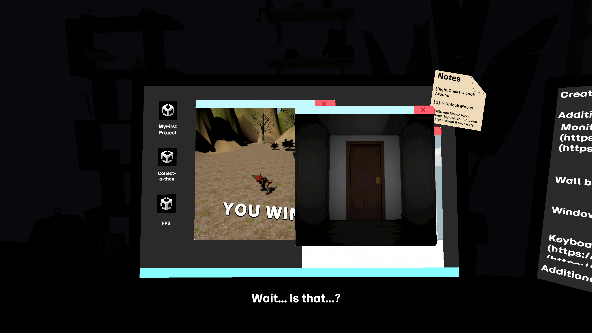

Experience about replaying your first game projects.
Second place winner of the "Most Creative Use of Anniversary Assets" category!

Carson Moon
November 7th - 9th, 2025
Unity
I'm very proud to have placed 2nd place in the Unity 20th Anniversary Game Jam in the "Most Creative Use of 20th Anniversary Assets" category. This is the most recent game jam that I have completed.
Showcase of all environments in one scene.
When the theme of "Timeless" got announced, I immediately wanted to create something about progression through time. Because of the Unity assets that were provided, I chose to create three experiences and ground them in a "reality." I set up a system to allow for three sets of inputs to be swapped based on what window was clicked last. Early on, I set up three player controllers for three completely different genres. One of the more interesting aspects of this project is how everything takes place in one scene. Cinemachine was a huge help in managing the different camera states to achieve this. About half way through, I determined that I need a better ending to the experience and settled on doing something a bit meta.
I am beyond happy with what I was able to create in two days by myself for this jam. Of course, a few issues persisted after time was up; the most egregious being a lighting issue with the 3D scenes. Althought I wish I could have fixed these problems in time, it's important for me to remind myself that I was working under pressure and was able to accomplish something worth showcasing.
